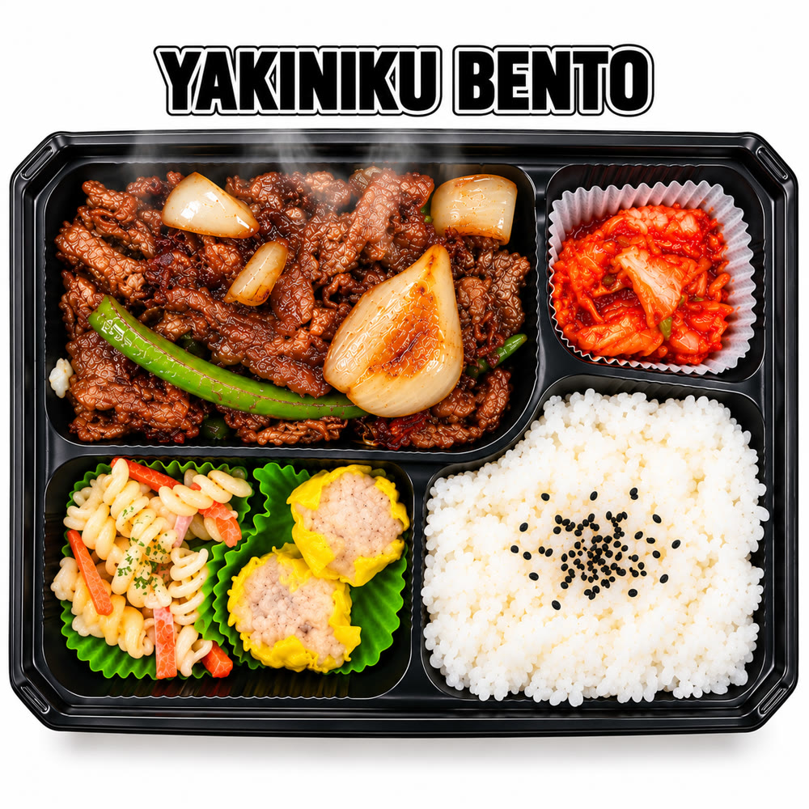

ばんごの想い
特別な日のごちそうより、何気ない毎日のごはんを大事にしたい。
ばんごは、真心を込めて手作りした日本のごはんを、バンコクで暮らす人、働く人、旅する人の日常に届ける店です。
おにぎりは注文を受けてから握る、握りたてが基本です。

ばんごのブランド
 ONIGIRI BANGO
ONIGIRI BANGO
おにぎりばんご
定番の鮭から、ここでしか食べられない具まで。注文を受けてから握る、握りたてのおにぎり。

BENTO BANGOべんとうばんご
チキン南蛮、焼肉、とんかつ、鮭の塩焼き。日本の味そのままの手作り弁当。
 DRAGONBURG 39
DRAGONBURG 39
ドラゴンバーグ39
オリジナルデミグラスでじっくり煮込んだ、ここにしかない煮込みハンバーグ。
ご注文方法
LINE注文いちばんおトク。LINE公式アカウント「ばんご」からメニューを見て注文、QRでお支払い。
GrabGrabで「Onigiri Bango」と検索してください。
LINE MANLINE MANからもご注文いただけます。
テイクアウトお店で直接受け取りもOKです。
店舗情報
| 店名 | おにぎりばんご（ONIGIRI BANGO） べんとうばんご／ドラゴンバーグ39 |
|---|---|
| 住所 | 181/1 Soi Sukhumvit 39, Khlong Tan Nuea, Watthana, Bangkok 10110 |
| 行き方 | Soi 39のフジスーパー2号店のところのS字カーブから、スパライプレイスのあるソイに入って10m、右側の1階。 ※Soi 39はスクンビット通り側から車で入れません（逆一通）。 |
| 営業時間 | 10:00〜23:00 |
| 定休日 | 毎週水曜日 |
| 電話 | 084-334-3939 |
| LINE | @455srjrl |